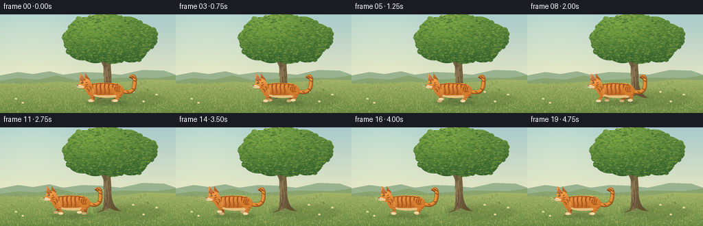
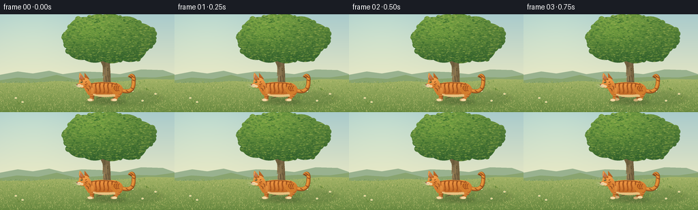

CODING AGENTS AS PIXEL WORLD MODELS
traex/GPT-6.1-Sol · instance_preservation_0054
点击播放 · 原生 RGB 像素
逐轮保存的候选
回放视频、检查图与代码变化。
每份候选均可单独播放。实际图片检查记录在下方工具轨迹中。
候选 01播放与检查图
点击播放 · 原生 RGB 像素


展开代码变化
--- 上一保存版本
+++ 本次保存版本
@@ -0,0 +1,269 @@
+from pathlib import Path
+import math
+import numpy as np
+from PIL import Image, ImageDraw, ImageFilter
+import artifact_io
+
+ROOT = Path(__file__).resolve().parent
+W,H,S = 256,144,4
+SW,SH=W*S,H*S
+rng=np.random.default_rng(642)
+
+def pts(p): return [(round(x*S),round(y*S)) for x,y in p]
+def line(d,p,fill,width=1): d.line(pts(p),fill=tuple(int(v) for v in fill),width=max(1,round(width*S)),joint='curve')
+def ell(d,box,fill): d.ellipse(tuple(round(v*S) for v in box),fill=fill)
+def poly(d,p,fill): d.polygon(pts(p),fill=fill)
+def bezier(p,steps=28):
+ p=np.array(p,dtype=float); out=[]
+ for t in np.linspace(0,1,steps):
+ out.append(tuple((1-t)**3*p[0]+3*(1-t)**2*t*p[1]+3*(1-t)*t*t*p[2]+t**3*p[3]))
+ return out
+
+def shape_segments(start,segs):
+ out=[start]; now=start
+ for a,b,c in segs:
+ out+=bezier([now,a,b,c])[1:];now=c
+ return out
+
+def shaded_shape(image, points, top, bottom, seed=1, noise=1.5, highlight=None):
+ mask=Image.new('L',(SW,SH));d=ImageDraw.Draw(mask);poly(d,points,255)
+ arr=np.array(mask); yy,xx=np.mgrid[:SH,:SW]
+ ids=np.nonzero(arr)
+ if not len(ids[0]): return
+ y0,y1=ids[0].min(),ids[0].max()
+ q=np.clip((yy-y0)/max(y1-y0,1),0,1)[...,None]
+ col=np.array(top)[None,None,:]*(1-q)+np.array(bottom)[None,None,:]*q
+ r=np.random.default_rng(seed)
+ n=r.normal(0,noise,(SH,SW,1))
+ col=col+n
+ if highlight:
+ x,y,strength,rx,ry=highlight
+ h=np.exp(-((xx/S-x)/rx)**2-((yy/S-y)/ry)**2)[...,None]*strength
+ col=col+h
+ texture=Image.fromarray(np.clip(col,0,255).astype(np.uint8))
+ image.paste(texture,(0,0),mask)
+ return mask
+
+# A stationary, sunlit meadow background; all geometry is drawn locally.
+yy,xx=np.mgrid[:SH,:SW]
+a=np.clip(yy/(SH*.75),0,1)[...,None]
+sky=np.array([169,203,204])*(1-a)+np.array([236,233,195])*a
+sky=np.broadcast_to(sky,(SH,SW,3)).copy()
+sun=np.exp(-((xx/S-48)/85)**2-((yy/S-15)/70)**2)[...,None]
+sky+=sun*np.array([16,13,4])
+bg=Image.fromarray(np.clip(sky,0,255).astype(np.uint8));d=ImageDraw.Draw(bg)
+# Soft, far-away land forms.
+poly(d,[(0,94),(0,89),(26,84),(48,87),(72,83),(92,88),(120,84),(147,85),(176,88),(207,81),(239,82),(256,88),(256,144),(0,144)],(153,178,143))
+poly(d,[(0,104),(0,97),(25,93),(56,95),(83,89),(111,96),(148,94),(184,92),(227,93),(256,89),(256,144),(0,144)],(137,164,111))
+# Ground gradient.
+ground=Image.new('L',(SW,SH));gd=ImageDraw.Draw(ground)
+poly(gd,[(0,101),(43,101),(86,98),(124,100),(175,99),(216,95),(256,96),(256,144),(0,144)],255)
+q=np.clip((yy/S-97)/47,0,1)[...,None]
+colors=np.array([162,179,103])*(1-q)+np.array([102,135,63])*q
+colors+=rng.normal(0,1.7,(SH,SW,1))
+bg.paste(Image.fromarray(np.clip(colors,0,255).astype(np.uint8)),(0,0),ground)
+d=ImageDraw.Draw(bg)
+for i in range(4300):
+ x=rng.uniform(0,256);y=rng.uniform(98,144)
+ if y < 100-0.02*x:continue
+ shade=rng.choice([0,1,2,3,4]); palette=[(127,155,77),(177,187,110),(146,168,86),(103,139,65),(191,192,116)]
+ h=rng.uniform(.4,2.4)*(y/144)
+ line(d,[(x,y),(x+rng.uniform(-1.2,1.2),y-h)],palette[shade],rng.uniform(.2,.55))
+# broad tree shadow and ground contact.
+shadow=Image.new('RGBA',(SW,SH));sd=ImageDraw.Draw(shadow)
+ell(sd,(139,113,239,134),(43,72,33,37));ell(sd,(138,116,184,128),(34,53,23,50))
+shadow=shadow.filter(ImageFilter.GaussianBlur(2.1*S));bg=Image.alpha_composite(bg.convert('RGBA'),shadow).convert('RGB')
+# Roots, trunk, branches.
+trunk=shape_segments((149,120),[
+ ((151,113),(153,98),(151,86)),((151,69),(146,53),(145,39)),
+ ((149,37),(159,36),(164,42)),((158,61),(162,77),(162,92)),
+ ((162,108),(166,117),(176,122)),((165,122),(160,117),(158,118)),
+ ((154,120),(149,123),(141,124)),((145,122),(148,122),(149,120))])
+shaded_shape(bg,trunk,(117,102,67),(100,80,49),11,1.8,highlight=(154,89,24,5,48))
+d=ImageDraw.Draw(bg)
+# Boughs with organic tapers.
+for p,w,col in [([(155,77),(146,58),(124,42)],7,(112,96,63)), ([(155,68),(170,46),(187,29)],6,(108,94,61)), ([(153,53),(153,30),(144,17)],5,(124,108,71)), ([(169,48),(186,45),(205,33)],3,(119,102,68)), ([(145,58),(133,56),(119,51)],3,(110,92,58))]:
+ line(d,p,col,w)
+for i in range(29):
+ x=rng.uniform(151,161); y=rng.uniform(63,116)
+ line(d,[(x,y),(x+rng.uniform(-1,1),y+rng.uniform(4,13))],rng.choice([(89,73,47),(137,115,73),(165,137,84)]),rng.uniform(.25,.9))
+line(d,[(155,91),(156,104),(153,116)],(79,64,42),.7)
+line(d,[(153,89),(154,98)],(173,144,91),.7)
+ell(d,(157,79,159,83),(80,69,44));ell(d,(157.4,79.4,158.6,82.3),(134,111,67))
+# Detailed irregular leafy crown, with unified shading, not disjoint blobs.
+leafmask=Image.new('L',(SW,SH));ld=ImageDraw.Draw(leafmask)
+clusters=[(114,36,22,20),(124,23,24,19),(144,20,24,20),(161,18,24,19),(185,22,24,19),(205,34,23,21),(191,47,25,23),(164,47,26,25),(139,47,27,24),(120,48,23,19)]
+for x,y,rx,ry in clusters:ell(ld,(x-rx,y-ry,x+rx,y+ry),255)
+for i in range(90):
+ x,y,rx,ry=clusters[rng.integers(len(clusters))];th=rng.uniform(0,2*math.pi)
+ cx=x+rx*.92*math.cos(th);cy=y+ry*.92*math.sin(th)
+ rr=rng.uniform(2,5);ell(ld,(cx-rr,cy-rr,cx+rr,cy+rr),255)
+q=np.clip((yy/S-4)/73,0,1)[...,None]
+cc=np.array([101,142,63])*(1-q)+np.array([44,89,43])*q
+light=np.exp(-((xx/S-131)/57)**2-((yy/S-23)/30)**2)[...,None]
+cc+=light*np.array([27,29,6])+rng.normal(0,1.7,(SH,SW,1))
+bg.paste(Image.fromarray(np.clip(cc,0,255).astype(np.uint8)),(0,0),leafmask)
+leafimage=Image.new('RGBA',(SW,SH));ld=ImageDraw.Draw(leafimage)
+for i in range(3100):
+ cx=rng.uniform(90,230);cy=rng.uniform(0,75)
+ if leafmask.getpixel((int(cx*S),min(SH-1,int(cy*S))))==0: continue
+ r=rng.uniform(.6,2.0); angle=rng.uniform(-1,1)
+ shine=max(0,1-cy/90)*max(.2,1-(cx-125)/160)
+ c=rng.choice([(91,131,56),(123,156,66),(68,117,48),(51,100,43),(145,169,77),(101,144,55)])
+ color=tuple(int(np.clip(v+(shine-.5)*12,0,255)) for v in c)+(rng.integers(95,200).item(),)
+ ell(ld,(cx-r,cy-r*.42,cx+r,cy+r*.42),color)
+ if i%5==0:line(ld,[(cx-r*.55,cy),(cx+r*.6,cy-.15)],(176,190,101,50),.16)
+leafimage.putalpha(Image.fromarray(np.minimum(np.array(leafimage.getchannel('A')),np.array(leafmask))))
+bg=Image.alpha_composite(bg.convert('RGBA'),leafimage).convert('RGB')
+# Small plants around the roots; a few daisies give scale without stealing focus.
+d=ImageDraw.Draw(bg)
+for x,y in [(135,124),(178,125),(186,125),(28,132),(232,125),(217,112)]:
+ for j in range(7):
+ line(d,[(x+rng.uniform(-2,2),y),(x+rng.uniform(-4,4),y-rng.uniform(2,6))],rng.choice([(80,118,49),(112,145,64),(152,170,83)]),.5)
+for x,y in [(23,123),(33,129),(209,127),(228,117),(194,113)]:
+ line(d,[(x,y+3),(x,y)],(77,125,53),.45)
+ for ang in np.arange(5)*2*math.pi/5:
+ ox,oy=math.cos(ang)*1.1,math.sin(ang)*.8
+ ell(d,(x+ox-.7,y+oy-.5,x+ox+.7,y+oy+.5),(239,232,193))
+ ell(d,(x-.4,y-.4,x+.4,y+.4),(224,181,67))
+
+# A single persistent orange tabby in profile, animated anatomically.
+def draw_cat(base,cx,t,moving):
+ im=base.copy(); layer=Image.new('RGBA',(SW,SH));ld=ImageDraw.Draw(layer)
+ ell(ld,(cx-29,125,cx+32,133),(37,54,24,53))
+ ell(ld,(cx-18,126.7,cx+24,131),(39,46,21,49))
+ layer=layer.filter(ImageFilter.GaussianBlur(1.35*S))
+ im=Image.alpha_composite(im.convert('RGBA'),layer).convert('RGB')
+ phase=t*math.pi*1.7
+ bob=.5*math.sin(phase*2)*moving
+ y=128+bob
+ def tr(p):return [(cx+x,y+z) for x,z in p]
+ def shape(p,c1,c2,seed,hl=None):
+ return shaded_shape(im,tr(p),c1,c2,seed,.9,highlight=None if hl is None else (cx+hl[0],y+hl[1],hl[2],hl[3],hl[4]))
+ def catline(p,c,w=1): line(ImageDraw.Draw(im),tr(p),c,w)
+ def catellipse(box,c):ell(ImageDraw.Draw(im),(cx+box[0],y+box[1],cx+box[2],y+box[3]),c)
+ def catpoly(p,c):poly(ImageDraw.Draw(im),tr(p),c)
+ # S-shaped raised tail, connected to the same rump in every frame.
+ sway=1.2*math.sin(t*1.8)
+ tail=bezier([(21,-18),(36,-11),(44,-16),(43+sway,-30)])+bezier([(43+sway,-30),(44+sway,-37),(40+sway,-40),(37+sway,-35)])[1:]
+ catline(tail,(137,74,28),5.9);catline([(x-.3,z-.5) for x,z in tail],(205,121,42),4.7)
+ catline([(x-.6,z-.85) for x,z in tail],(229,149,60),2.4)
+ for k in [.18,.35,.53,.68,.85]:
+ idx=int(k*(len(tail)-1));x,z=tail[idx]
+ catline([(x-2.1,z-1),(x+1.7,z+.8)],(143,75,30),1.35)
+ catline(tail[-4:],(127,69,32),4.1)
+ # Paws alternate, with feet staying low while supporting weight.
+ def leg(hx,hz,ph,far,back):
+ stride=math.sin(ph)*5.3*moving
+ lift=max(0,math.cos(ph))*3.0*moving
+ footx=hx+stride;footz=-1-lift
+ if not moving:footx=hx-1;footz=-1
+ knee=hx+(3 if back else -1)+stride*.36
+ p=shape_segments((hx-3,hz),[
+ ((hx+3,hz-1),(hx+4,hz+4),(knee+2,-9)),
+ ((knee+2,-7),(footx+1,footz-4),(footx+2,footz-1)),
+ ((footx+1,footz+1),(footx-5,footz+1),(footx-6,footz-1)),
+ ((footx-6,footz-3),(footx-2,footz-3),(footx-2,-5-lift)),
+ ((knee-3,-9),(hx-4,hz+6),(hx-3,hz))])
+ shape(p,(183,104,38) if far else (231,148,66),(145,82,33) if far else (195,113,43),27+int(back)+int(far)*2)
+ catellipse((footx-5.8,footz-2.9,footx+1.5,footz+.8),(205,172,117) if far else (244,217,165))
+ for k in range(2):catline([(knee-2,-7.8-k*3),(knee+2,-7.1-k*3)],(146,80,34) if far else (167,87,31),1)
+ if not far:
+ for tx in [footx-4,footx-1.8]:catline([(tx,footz-.1),(tx+.1,footz+.65)],(173,135,90),.3)
+ leg(-16,-19,phase+math.pi,True,False)
+ leg(16,-17,phase,True,True)
+ body=shape_segments((-25,-20),[
+ ((-22,-29),(-8,-29),(6,-28)),((21,-29),(28,-23),(27,-16)),
+ ((27,-10),(22,-6),(13,-7)),((1,-6),(-7,-6),(-17,-9)),
+ ((-23,-8),(-27,-12),(-25,-20))])
+ mask=shape(body,(230,141,55),(178,93,31),81,(-8,-23,14,26,8))
+ # Creamy underside and orange flank volume, constrained to torso.
+ belly=Image.new('RGB',(SW,SH));bd=ImageDraw.Draw(belly)
+ poly(bd,tr([(-22,-13),(-11,-10),(5,-10),(18,-11),(21,-6),(-17,-6)]),(232,193,128))
+ bellymask=Image.new('L',(SW,SH));bmd=ImageDraw.Draw(bellymask)
+ poly(bmd,tr([(-22,-13),(-11,-10),(5,-10),(18,-11),(21,-6),(-17,-6)]),255)
+ bellymask=Image.fromarray(np.minimum(np.array(bellymask),np.array(mask)))
+ im.paste(belly,(0,0),bellymask)
+ # Curved tabby bars follow the torso rather than acting as a flat pattern.
+ for k in range(7):
+ x=-18+k*6
+ p=bezier([(x,-26.5),(x-3,-21),(x+2,-17),(x-1,-12)])
+ catline(p,(169,87,30),1.9 if k%2 else 2.3)
+ catline([(a-.35,b) for a,b in p[:9]],(137,74,30),.55)
+ catline([(-20,-26),(-4,-27.5),(10,-26.8),(20,-24)],(150,77,28),1.2)
+ # The visible haunch and front foreleg.
+ leg(18,-18,phase+math.pi,False,True)
+ leg(-18,-20,phase,False,False)
+ catellipse((10,-24,26,-10),(210,124,44))
+ for k in range(3):
+ catline(bezier([(16+k*3,-23),(13+k*3,-20),(14+k*3,-17),(18+k*2,-15)]),(157,77,28),1.3)
+ # Shoulder and neck slope into the head.
+ neck=shape_segments((-24,-10),[
+ ((-27,-15),(-32,-20),(-30,-27)),((-29,-32),(-24,-34),(-21,-29)),
+ ((-18,-25),(-19,-17),(-20,-11)),((-21,-9),(-22,-9),(-24,-10))])
+ shape(neck,(235,150,68),(202,117,42),33)
+ catline([(-25,-24),(-21,-22),(-21,-18)],(155,81,34),1.6)
+ catline([(-27,-20),(-24,-18),(-23,-15)],(157,84,32),1.4)
+ # Far ear, then angular cat skull with a realistic short muzzle.
+ shape([(-29,-31),(-29,-42),(-22,-33)],(198,110,41),(170,89,33),49)
+ head=shape_segments((-35,-33),[
+ ((-30,-36),(-24,-35),(-22,-30)),((-20,-26),(-24,-20),(-28,-20)),
+ ((-31,-19),(-35,-20),(-37,-22)),((-42,-22),(-41,-26),(-37,-27)),
+ ((-38,-30),(-37,-32),(-35,-33))])
+ shape(head,(239,157,70),(209,118,41),53,(-32,-29,11,9,7))
+ ear=shape_segments((-36,-31),[
+ ((-37,-34),(-38,-38),(-36,-42)),((-34,-41),(-31,-36),(-29,-33)),
+ ((-31,-31),(-34,-31),(-36,-31))])
+ shape(ear,(229,148,69),(180,97,37),55)
+ catpoly([(-35.7,-39.5),(-35.2,-33.9),(-31.6,-33.2)],(183,116,95))
+ catline([(-35.8,-40),(-36.6,-35)],(250,189,103),.7)
+ # Forehead bars, cheek stripes, small amber-green eye.
+ catline([(-35,-32),(-32.8,-30.6),(-31.8,-29.4)],(143,77,34),1)
+ catline([(-29,-33.5),(-29.9,-31.8)],(151,80,33),1.15)
+ catline([(-26,-29),(-28,-27.9)],(151,77,28),1.15)
+ catline([(-24.8,-26),(-28.8,-24.6)],(151,77,28),1.2)
+ catline([(-26,-23),(-29,-22)],(158,80,28),1.0)
+ catpoly([(-35.7,-28.2),(-33.9,-29.2),(-31.5,-28.7),(-32.5,-27.2),(-34.5,-27.1)],(68,66,37))
+ catellipse((-35.1,-28.8,-32.7,-27.15),(178,181,82))
+ catellipse((-34.25,-28.8,-33.6,-27.15),(25,35,23))
+ catellipse((-34.6,-28.6,-34.13,-28.17),(255,249,216))
+ # Pale muzzle has whisker dots, black lip edge, and a small pink nose.
+ catellipse((-40.4,-25.2,-33.6,-20.7),(245,217,166))
+ catellipse((-35.2,-24.1,-30.8,-20.5),(239,205,149))
+ catpoly([(-41.4,-25),(-38.9,-25.3),(-40,-23.5)],(134,77,67))
+ catline([(-40,-23.6),(-39.2,-22.4),(-36.8,-22.1)],(108,75,51),.42)
+ for x,z in [(-37.7,-23.6),(-36.4,-23),(-37.5,-22.1)]:catellipse((x-.15,z-.15,x+.15,z+.15),(125,87,52))
+ for a,b in [((-37,-23.3),(-46,-25.6)),((-37,-22.7),(-46.8,-22.7)),((-36.5,-22),(-44.5,-20.1))]:
+ catline(bezier([a,((a[0]+b[0])*.5,a[1]-.5),(b[0]+1,b[1]),b]),(238,229,197),.25)
+ # Subpixel highlights and sparse coat filaments prevent a plastic surface.
+ fur_rng=np.random.default_rng(874)
+ for i in range(155):
+ fx=fur_rng.uniform(-24,25);fz=fur_rng.uniform(-26,-9)
+ px,py=int((cx+fx)*S),int((y+fz)*S)
+ if 0<=px<SW and 0<=py<SH and mask.getpixel((px,py)):
+ catline([(fx,fz),(fx+fur_rng.uniform(.25,.75),fz+.35)],(237,157,72),.16)
+ catline([(-35,-32),(-35.8,-31)],(255,186,95),.45)
+ return im
+
+frames=[]
+for i in range(20):
+ # An initial establishing pause, continuous walk to the left, then rest.
+ if i<3:
+ u=0.;moving=0.
+ elif i<=16:
+ u=(i-3)/13;moving=min(1,(i-2)/2,(17-i)/2)
+ else:
+ u=1.;moving=0.
+ # Smooth translation without changing identity, scale, or camera.
+ smooth=u*u*(3-2*u)
+ cx=153-73*smooth
+ frame=draw_cat(bg,cx,i/4,moving)
+ # Fine grass in front of the feet anchors the animal to the ground.
+ d=ImageDraw.Draw(frame)
+ for gx,gy in [(42,135),(63,136),(117,133),(180,132),(199,137),(246,138),(13,139)]:
+ line(d,[(gx,gy),(gx-.8,gy-2.7)],(110,145,62),.5)
+ line(d,[(gx,gy),(gx+1,gy-2)],(160,173,88),.45)
+ frame=frame.resize((W,H),Image.Resampling.LANCZOS)
+ frames.append(np.asarray(frame.convert('RGB'),dtype=np.uint8))
+artifact_io.save(np.stack(frames),ROOT)
+print('Saved 20 RGB frames at 256x144, 4 fps.')
可观测工具轨迹
实际执行的命令与返回图片。
命令 1exit 0
/bin/bash -lc 'ls -la && cat prompt.txt && cat GENERATION_RULES.md && cat task_spec.json'
命令 2exit 0
/bin/bash -lc "cat artifact_io.py && python - <<'PY'
import PIL,numpy
print('Pillow',PIL.__version__)
PY"命令 3exit 1
/bin/bash -lc "cat > generate.py <<'PY'
from pathlib import Path
import math
import numpy as np
from PIL import Image, ImageDraw, ImageFilter
import artifact_io
ROOT = Path(__file__).resolve().parent
W,H,S = 256,144,4
SW,SH=W*S,H*S
rng=np.random.default_rng(642)
def pts(p): return [(round(x*S),round(y*S)) for x,y in p]
def line(d,p,fill,width=1): d.line(pts(p),fill=fill,width=max(1,round(width*S)),joint='curve')
def ell(d,box,fill): d.ellipse(tuple(round(v*S) for v in box),fill=fill)
def poly(d,p,fill): d.polygon(pts(p),fill=fill)
def bezier(p,steps=28):
p=np.array(p,dtype=float); out=[]
for t in np.linspace(0,1,steps):
out.append(tuple((1-t)**3*p[0]+3*(1-t)**2*t*p[1]+3*(1-t)*t*t*p[2]+t**3*p[3]))
return out
def shape_segments(start,segs):
out=[start]; now=start
for a,b,c in segs:
out+=bezier([now,a,b,c])[1:];now=c
return out
def shaded_shape(image, points, top, bottom, seed=1, noise=1.5, highlight=None):
mask=Image.new('L',(SW,SH));d=ImageDraw.Draw(mask);poly(d,points,255)
arr=np.array(mask); yy,xx=np.mgrid[:SH,:SW]
ids=np.nonzero(arr)
if not len(ids[0]): return
y0,y1=ids[0].min(),ids[0].max()
q=np.clip((yy-y0)/max(y1-y0,1),0,1)[...,None]
col=np.array(top)[None,None,:]*(1-q)+np.array(bottom)[None,None,:]*q
r=np.random.default_rng(seed)
n=r.normal(0,noise,(SH,SW,1))
col=col+n
if highlight:
x,y,strength,rx,ry=highlight
h=np.exp(-((xx/S-x)/rx)**2-((yy/S-y)/ry)**2)[...,None]*strength
col=col+h
texture=Image.fromarray(np.clip(col,0,255).astype(np.uint8),'RGB')
image.paste(texture,(0,0),mask)
return mask
# A stationary, sunlit meadow background; all geometry is drawn locally.
yy,xx=np.mgrid[:SH,:SW]
a=np.clip(yy/(SH*.75),0,1)[...,None]
sky=np.array([169,203,204])*(1-a)+np.array([236,233,195])*a
sky=np.broadcast_to(sky,(SH,SW,3)).copy()
sun=np.exp(-((xx/S-48)/85)**2-((yy/S-15)/70)**2)[...,None]
sky+=sun*np.array([16,13,4])
bg=Image.fromarray(np.clip(sky,0,255).astype(np.uint8));d=ImageDraw.Draw(bg)
# Soft, far-away land forms.
poly(d,[(0,94),(0,89),(26,84),(48,87),(72,83),(92,88),(120,84),(147,85),(176,88),(207,81),(239,82),(256,88),(256,144),(0,144)],(153,178,143))
poly(d,[(0,104),(0,97),(25,93),(56,95),(83,89),(111,96),(148,94),(184,92),(227,93),(256,89),(256,144),(0,144)],(137,164,111))
# Ground gradient.
ground=Image.new('L',(SW,SH));gd=ImageDraw.Draw(ground)
poly(gd,[(0,101),(43,101),(86,98),(124,100),(175,99),(216,95),(256,96),(256,144),(0,144)],255)
q=np.clip((yy/S-97)/47,0,1)[...,None]
colors=np.array([162,179,103])*(1-q)+np.array([102,135,63])*q
colors+=rng.normal(0,1.7,(SH,SW,1))
bg.paste(Image.fromarray(np.clip(colors,0,255).astype(np.uint8)),(0,0),ground)
d=ImageDraw.Draw(bg)
for i in range(4300):
x=rng.uniform(0,256);y=rng.uniform(98,144)
if y < 100-0.02*x:continue
shade=rng.choice([0,1,2,3,4]); palette=[(127,155,77),(177,187,110),(146,168,86),(103,139,65),(191,192,116)]
h=rng.uniform(.4,2.4)*(y/144)
line(d,[(x,y),(x+rng.uniform(-1.2,1.2),y-h)],palette[shade],rng.uniform(.2,.55))
# broad tree shadow and ground contact.
shadow=Image.new('RGBA',(SW,SH));sd=ImageDraw.Draw(shadow)
ell(sd,(139,113,239,134),(43,72,33,37));ell(sd,(138,116,184,128),(34,53,23,50))
shadow=shadow.filter(ImageFilter.GaussianBlur(2.1*S));bg=Image.alpha_composite(bg.convert('RGBA'),shadow).convert('RGB')
# Roots, trunk, branches.
trunk=shape_segments((149,120),[
((151,113),(153,98),(151,86)),((151,69),(146,53),(145,39)),
((149,37),(159,36),(164,42)),((158,61),(162,77),(162,92)),
((162,108),(166,117),(176,122)),((165,122),(160,117),(158,118)),
((154,120),(149,123),(141,124)),((145,122),(148,122),(149,120))])
shaded_shape(bg,trunk,(117,102,67),(100,80,49),11,1.8,highlight=(154,89,24,5,48))
d=ImageDraw.Draw(bg)
# Boughs with organic tapers.
for p,w,col in [([(155,77),(146,58),(124,42)],7,(112,96,63)), ([(155,68),(170,46),(187,29)],6,(108,94,61)), ([(153,53),(153,30),(144,17)],5,(124,108,71)), ([(169,48),(186,45),(205,33)],3,(119,102,68)), ([(145,58),(133,56),(119,51)],3,(110,92,58))]:
line(d,p,col,w)
for i in range(29):
x=rng.uniform(151,161); y=rng.uniform(63,116)
line(d,[(x,y),(x+rng.uniform(-1,1),y+rng.uniform(4,13))],rng.choice([(89,73,47),(137,115,73),(165,137,84)]),rng.uniform(.25,.9))
line(d,[(155,91),(156,104),(153,116)],(79,64,42),.7)
line(d,[(153,89),(154,98)],(173,144,91),.7)
ell(d,(157,79,159,83),(80,69,44));ell(d,(157.4,79.4,158.6,82.3),(134,111,67))
# Detailed irregular leafy crown, with unified shading, not disjoint blobs.
leafmask=Image.new('L',(SW,SH));ld=ImageDraw.Draw(leafmask)
clusters=[(114,36,22,20),(124,23,24,19),(144,20,24,20),(161,18,24,19),(185,22,24,19),(205,34,23,21),(191,47,25,23),(164,47,26,25),(139,47,27,24),(120,48,23,19)]
for x,y,rx,ry in clusters:ell(ld,(x-rx,y-ry,x+rx,y+ry),255)
for i in range(90):
x,y,rx,ry=clusters[rng.integers(len(clusters))];th=rng.uniform(0,2*math.pi)
cx=x+rx*.92*math.cos(th);cy=y+ry*.92*math.sin(th)
rr=rng.uniform(2,5);ell(ld,(cx-rr,cy-rr,cx+rr,cy+rr),255)
q=np.clip((yy/S-4)/73,0,1)[...,None]
cc=np.array([101,142,63])*(1-q)+np.array([44,89,43])*q
light=np.exp(-((xx/S-131)/57)**2-((yy/S-23)/30)**2)[...,None]
cc+=light*np.array([27,29,6])+rng.normal(0,1.7,(SH,SW,1))
bg.paste(Image.fromarray(np.clip(cc,0,255).astype(np.uint8)),(0,0),leafmask)
leafimage=Image.new('RGBA',(SW,SH));ld=ImageDraw.Draw(leafimage)
for i in range(3100):
cx=rng.uniform(90,230);cy=rng.uniform(0,75)
if leafmask.getpixel((int(cx*S),min(SH-1,int(cy*S))))==0: continue
r=rng.uniform(.6,2.0); angle=rng.uniform(-1,1)
shine=max(0,1-cy/90)*max(.2,1-(cx-125)/160)
c=rng.choice([(91,131,56),(123,156,66),(68,117,48),(51,100,43),(145,169,77),(101,144,55)])
color=tuple(int(np.clip(v+(shine-.5)*12,0,255)) for v in c)+(rng.integers(95,200).item(),)
ell(ld,(cx-r,cy-r*.42,cx+r,cy+r*.42),color)
if i%5==0:line(ld,[(cx-r*.55,cy),(cx+r*.6,cy-.15)],(176,190,101,50),.16)
leafimage.putalpha(Image.fromarray(np.minimum(np.array(leafimage.getchannel('A')),np.array(leafmask))))
bg=Image.alpha_composite(bg.convert('RGBA'),leafimage).convert('RGB')
# Small plants around the roots; a few daisies give scale without stealing focus.
d=ImageDraw.Draw(bg)
for x,y in [(135,124),(178,125),(186,125),(28,132),(232,125),(217,112)]:
for j in range(7):
line(d,[(x+rng.uniform(-2,2),y),(x+rng.uniform(-4,4),y-rng.uniform(2,6))],rng.choice([(80,118,49),(112,145,64),(152,170,83)]),.5)
for x,y in [(23,123),(33,129),(209,127),(228,117),(194,113)]:
line(d,[(x,y+3),(x,y)],(77,125,53),.45)
for ang in np.arange(5)*2*math.pi/5:
ox,oy=math.cos(ang)*1.1,math.sin(ang)*.8
ell(d,(x+ox-.7,y+oy-.5,x+ox+.7,y+oy+.5),(239,232,193))
ell(d,(x-.4,y-.4,x+.4,y+.4),(224,181,67))
# A single persistent orange tabby in profile, animated anatomically.
def draw_cat(base,cx,t,moving):
im=base.copy(); layer=Image.new('RGBA',(SW,SH));ld=ImageDraw.Draw(layer)
ell(ld,(cx-29,125,cx+32,133),(37,54,24,53))
ell(ld,(cx-18,126.7,cx+24,131),(39,46,21,49))
layer=layer.filter(ImageFilter.GaussianBlur(1.35*S))
im=Image.alpha_composite(im.convert('RGBA'),layer).convert('RGB')
phase=t*math.pi*1.7
bob=.5*math.sin(phase*2)*moving
y=128+bob
def tr(p):return [(cx+x,y+z) for x,z in p]
def shape(p,c1,c2,seed,hl=None):
return shaded_shape(im,tr(p),c1,c2,seed,.9,highlight=None if hl is None else (cx+hl[0],y+hl[1],hl[2],hl[3],hl[4]))
def catline(p,c,w=1): line(ImageDraw.Draw(im),tr(p),c,w)
def catellipse(box,c):ell(ImageDraw.Draw(im),(cx+box[0],y+box[1],cx+box[2],y+box[3]),c)
def catpoly(p,c):poly(ImageDraw.Draw(im),tr(p),c)
# S-shaped raised tail, connected to the same rump in every frame.
sway=1.2*math.sin(t*1.8)
tail=bezier([(21,-18),(36,-11),(44,-16),(43+sway,-30)])+bezier([(43+sway,-30),(44+sway,-37),(40+sway,-40),(37+sway,-35)])[1:]
catline(tail,(137,74,28),5.9);catline([(x-.3,z-.5) for x,z in tail],(205,121,42),4.7)
catline([(x-.6,z-.85) for x,z in tail],(229,149,60),2.4)
for k in [.18,.35,.53,.68,.85]:
idx=int(k*(len(tail)-1));x,z=tail[idx]
catline([(x-2.1,z-1),(x+1.7,z+.8)],(143,75,30),1.35)
catline(tail[-4:],(127,69,32),4.1)
# Paws alternate, with feet staying low while supporting weight.
def leg(hx,hz,ph,far,back):
stride=math.sin(ph)*5.3*moving
lift=max(0,math.cos(ph))*3.0*moving
footx=hx+stride;footz=-1-lift
if not moving:footx=hx-1;footz=-1
knee=hx+(3 if back else -1)+stride*.36
p=shape_segments((hx-3,hz),[
((hx+3,hz-1),(hx+4,hz+4),(knee+2,-9)),
((knee+2,-7),(footx+1,footz-4),(footx+2,footz-1)),
((footx+1,footz+1),(footx-5,footz+1),(footx-6,footz-1)),
((footx-6,footz-3),(footx-2,footz-3),(footx-2,-5-lift)),
((knee-3,-9),(hx-4,hz+6),(hx-3,hz))])
shape(p,(183,104,38) if far else (231,148,66),(145,82,33) if far else (195,113,43),27+int(back)+int(far)*2)
catellipse((footx-5.8,footz-2.9,footx+1.5,footz+.8),(205,172,117) if far else (244,217,165))
for k in range(2):catline([(knee-2,-7.8-k*3),(knee+2,-7.1-k*3)],(146,80,34) if far else (167,87,31),1)
if not far:
for tx in [footx-4,footx-1.8]:catline([(tx,footz-.1),(tx+.1,footz+.65)],(173,135,90),.3)
leg(-16,-19,phase+math.pi,True,False)
leg(16,-17,phase,True,True)
body=shape_segments((-25,-20),[
((-22,-29),(-8,-29),(6,-28)),((21,-29),(28,-23),(27,-16)),
((27,-10),(22,-6),(13,-7)),((1,-6),(-7,-6),(-17,-9)),
((-23,-8),(-27,-12),(-25,-20))])
mask=shape(body,(230,141,55),(178,93,31),81,(-8,-23,14,26,8))
# Creamy underside and orange flank volume, constrained to torso.
belly=Image.new('RGB',(SW,SH));bd=ImageDraw.Draw(belly)
poly(bd,tr([(-22,-13),(-11,-10),(5,-10),(18,-11),(21,-6),(-17,-6)]),(232,193,128))
bellymask=Image.new('L',(SW,SH));bmd=ImageDraw.Draw(bellymask)
poly(bmd,tr([(-22,-13),(-11,-10),(5,-10),(18,-11),(21,-6),(-17,-6)]),255)
bellymask=Image.fromarray(np.minimum(np.array(bellymask),np.array(mask)))
im.paste(belly,(0,0),bellymask)
# Curved tabby bars follow the torso rather than acting as a flat pattern.
for k in range(7):
x=-18+k*6
p=bezier([(x,-26.5),(x-3,-21),(x+2,-17),(x-1,-12)])
catline(p,(169,87,30),1.9 if k%2 else 2.3)
catline([(a-.35,b) for a,b in p[:9]],(137,74,30),.55)
catline([(-20,-26),(-4,-27.5),(10,-26.8),(20,-24)],(150,77,28),1.2)
# The visible haunch and front foreleg.
leg(18,-18,phase+math.pi,False,True)
leg(-18,-20,phase,False,False)
catellipse((10,-24,26,-10),(210,124,44))
for k in range(3):
catline(bezier([(16+k*3,-23),(13+k*3,-20),(14+k*3,-17),(18+k*2,-15)]),(157,77,28),1.3)
# Shoulder and neck slope into the head.
neck=shape_segments((-24,-10),[
((-27,-15),(-32,-20),(-30,-27)),((-29,-32),(-24,-34),(-21,-29)),
((-18,-25),(-19,-17),(-20,-11)),((-21,-9),(-22,-9),(-24,-10))])
shape(neck,(235,150,68),(202,117,42),33)
catline([(-25,-24),(-21,-22),(-21,-18)],(155,81,34),1.6)
catline([(-27,-20),(-24,-18),(-23,-15)],(157,84,32),1.4)
# Far ear, then angular cat skull with a realistic short muzzle.
shape([(-29,-31),(-29,-42),(-22,-33)],(198,110,41),(170,89,33),49)
head=shape_segments((-35,-33),[
((-30,-36),(-24,-35),(-22,-30)),((-20,-26),(-24,-20),(-28,-20)),
((-31,-19),(-35,-20),(-37,-22)),((-42,-22),(-41,-26),(-37,-27)),
((-38,-30),(-37,-32),(-35,-33))])
shape(head,(239,157,70),(209,118,41),53,(-32,-29,11,9,7))
ear=shape_segments((-36,-31),[
((-37,-34),(-38,-38),(-36,-42)),((-34,-41),(-31,-36),(-29,-33)),
((-31,-31),(-34,-31),(-36,-31))])
shape(ear,(229,148,69),(180,97,37),55)
catpoly([(-35.7,-39.5),(-35.2,-33.9),(-31.6,-33.2)],(183,116,95))
catline([(-35.8,-40),(-36.6,-35)],(250,189,103),.7)
# Forehead bars, cheek stripes, small amber-green eye.
catline([(-35,-32),(-32.8,-30.6),(-31.8,-29.4)],(143,77,34),1)
catline([(-29,-33.5),(-29.9,-31.8)],(151,80,33),1.15)
catline([(-26,-29),(-28,-27.9)],(151,77,28),1.15)
catline([(-24.8,-26),(-28.8,-24.6)],(151,77,28),1.2)
catline([(-26,-23),(-29,-22)],(158,80,28),1.0)
catpoly([(-35.7,-28.2),(-33.9,-29.2),(-31.5,-28.7),(-32.5,-27.2),(-34.5,-27.1)],(68,66,37))
catellipse((-35.1,-28.8,-32.7,-27.15),(178,181,82))
catellipse((-34.25,-28.8,-33.6,-27.15),(25,35,23))
catellipse((-34.6,-28.6,-34.13,-28.17),(255,249,216))
# Pale muzzle has whisker dots, black lip edge, and a small pink nose.
catellipse((-40.4,-25.2,-33.6,-20.7),(245,217,166))
catellipse((-35.2,-24.1,-30.8,-20.5),(239,205,149))
catpoly([(-41.4,-25),(-38.9,-25.3),(-40,-23.5)],(134,77,67))
catline([(-40,-23.6),(-39.2,-22.4),(-36.8,-22.1)],(108,75,51),.42)
for x,z in [(-37.7,-23.6),(-36.4,-23),(-37.5,-22.1)]:catellipse((x-.15,z-.15,x+.15,z+.15),(125,87,52))
for a,b in [((-37,-23.3),(-46,-25.6)),((-37,-22.7),(-46.8,-22.7)),((-36.5,-22),(-44.5,-20.1))]:
catline(bezier([a,((a[0]+b[0])*.5,a[1]-.5),(b[0]+1,b[1]),b]),(238,229,197),.25)
# Subpixel highlights and sparse coat filaments prevent a plastic surface.
fur_rng=np.random.default_rng(874)
for i in range(155):
fx=fur_rng.uniform(-24,25);fz=fur_rng.uniform(-26,-9)
px,py=int((cx+fx)*S),int((y+fz)*S)
if 0<=px<SW and 0<=py<SH and mask.getpixel((px,py)):
catline([(fx,fz),(fx+fur_rng.uniform(.25,.75),fz+.35)],(237,157,72),.16)
catline([(-35,-32),(-35.8,-31)],(255,186,95),.45)
return im
frames=[]
for i in range(20):
# An initial establishing pause, continuous walk to the left, then rest.
if i<3:
u=0.;moving=0.
elif i<=16:
u=(i-3)/13;moving=min(1,(i-2)/2,(17-i)/2)
else:
u=1.;moving=0.
# Smooth translation without changing identity, scale, or camera.
smooth=u*u*(3-2*u)
cx=153-73*smooth
frame=draw_cat(bg,cx,i/4,moving)
# Fine grass in front of the feet anchors the animal to the ground.
d=ImageDraw.Draw(frame)
for gx,gy in [(42,135),(63,136),(117,133),(180,132),(199,137),(246,138),(13,139)]:
line(d,[(gx,gy),(gx-.8,gy-2.7)],(110,145,62),.5)
line(d,[(gx,gy),(gx+1,gy-2)],(160,173,88),.45)
frame=frame.resize((W,H),Image.Resampling.LANCZOS)
frames.append(np.asarray(frame.convert('RGB'),dtype=np.uint8))
artifact_io.save(np.stack(frames),ROOT)
print('Saved 20 RGB frames at 256x144, 4 fps.')
PY
python generate.py"命令 4exit 0
/bin/bash -lc "python - <<'PY' p='generate.py' s=open(p).read().replace(\"def line(d,p,fill,width=1): d.line(pts(p),fill=fill,width=max(1,round(width*S)),joint='curve')\", \"def line(d,p,fill,width=1): d.line(pts(p),fill=tuple(int(v) for v in fill),width=max(1,round(width*S)),joint='curve')\") s=s.replace(\"Image.fromarray(np.clip(col,0,255).astype(np.uint8),'RGB')\", \"Image.fromarray(np.clip(col,0,255).astype(np.uint8))\") open(p,'w').write(s) PY python generate.py"
命令 5exit 1
/bin/bash -lc "python - <<'PY'
from pathlib import Path
import numpy as np
from PIL import Image
p=Path('.')
f=np.stack([np.asarray(Image.open(p/'frames'/f'{i:02}.png')) for i in range(20)])
assert f.shape==(20,144,256,3) and f.dtype==np.uint8
assert all((p/n).exists() for n in ['generate.py','pixels.npz','index.html','inspection.png','transition_check.png'])
print('Verified artifacts and RGB frame dimensions.')
PY
command -v ffmpeg"保存候选 1 份；完成命令 5 次；可验证图片返回 0 张。原始 API 响应与完整日志保留在本地。